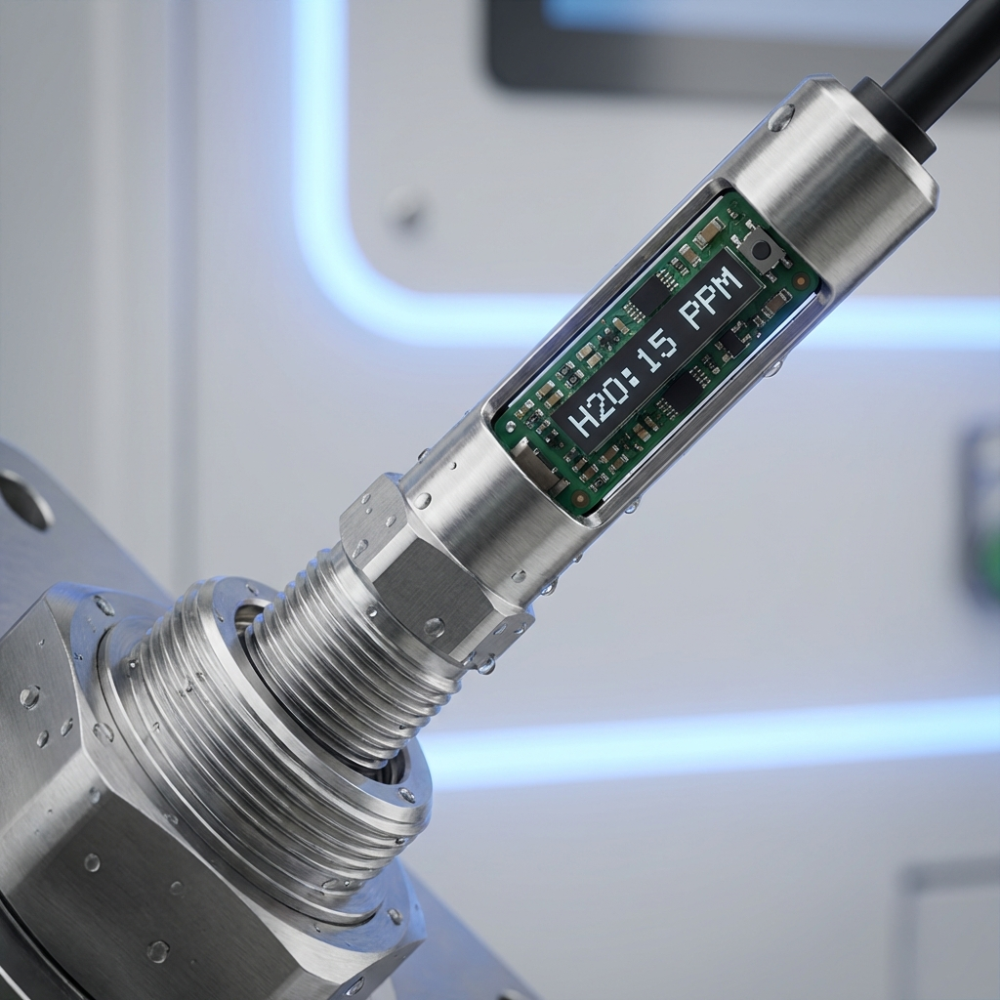

油中水含量测量与监测
绝缘油和润滑油中的水分含量是影响设备运行可靠性的关键指标。精准测量油中水含量，可以有效预防变压器绝缘劣化、轴承磨损加剧等问题，延长关键设备的使用寿命，降低维护成本。

油中水分测量专业知识
经验丰富是元芯的一大优点。拥有多年的气体和油品电容式湿度传感器开发和制造经验，元芯的客户遍及全球。
专业是元芯的又一优点。从电力变压器到润滑系统，从航运到纸浆和造纸，元芯服务行业范围广。传感器在我们自己的洁净室中制作而成，我们可靠的技术能实现长期稳定的准确测量。
是什么让我们的油中水测量精确？
元芯传感采用先进的薄膜电容技术，直接在油中测量相对饱和度(%RS)，避免了传统方法需要取样、运输、实验室分析的繁琐流程。
- 在线连续监测 - 无需取样，实时掌握油品状态
- 高精度传感 - 测量精度可达 ±2% RS，满足高端应用需求
- 耐油污设计 - 传感器不受油品污染物影响，长期稳定工作
- 宽温度范围 - 适应 -40°C 到 +180°C 的极端工况
- 免维护 - 无需耗材或机械部件，降低运维成本
获得收益
可靠性
在快速变化的条件下准确测量水饱和度和 PPM。
所有设备均接受校准，并可现场校准。
变送器中无移动部件。
长期稳定性
薄膜聚合物传感器设计可抵御污染，并且仅对水分具有高度选择性。
电容技术提供长期稳定的测量。
对油中的添加剂和污染物不敏感。
快速响应
可现场实时测量油中水分的实际相对饱和度 (%RS)。
无需对水分进行采样和实验室分析。
即使在变压器通电的情况下也可安装。